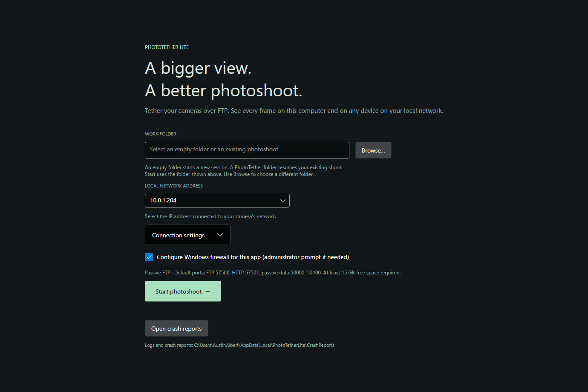

The home base
for your photoshoot.
PhotoTether Host, named PhotoTether Lite in the app, receives camera uploads and brings your session together in one live gallery.
- See the details. Zoom, pan, and inspect camera metadata alongside the image.
- Find your frame. Filter by photographer, camera brand, model, or serial number.
- Review at your pace. Lock an image while new uploads arrive, or keep the same zoom across frames.
- Keep your originals. Files stay in your chosen work folder. Resume an existing photoshoot later.

